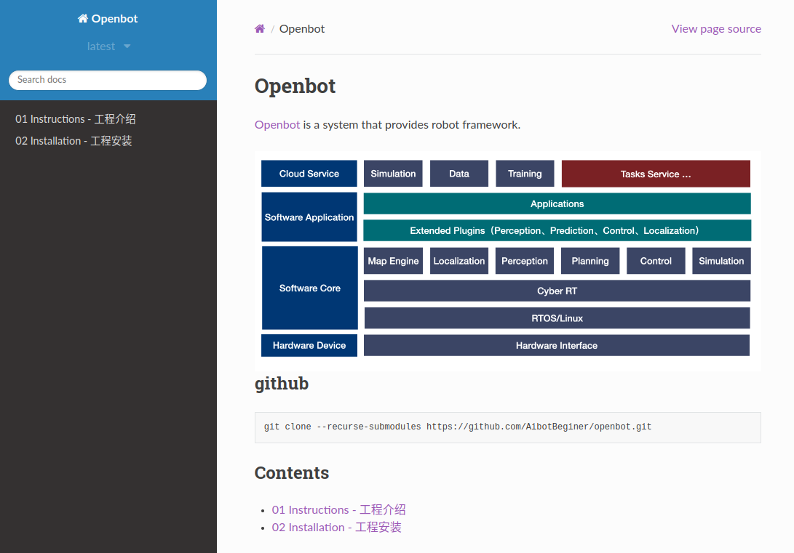

7. 文档导读

本手册按入门 → 安装运行 → 通信框架 → 导航栈各模块 → 工具与 FAQ 组织。各技术模块均采用统一的 §1–§9 文档结构。
7.1 全书目录
章节 |
路径 |
内容 |
|---|---|---|
01 入门 |
|
本指南：概览、架构、导航栈 |
02 安装 |
|
依赖、Docker、编译环境 |
03 通信 |
|
Autolink 架构与 API |
04 运行 |
|
启动、Docker、ROS 2 运行 |
05 框架 |
|
Framework 集成视角 |
06 定位 |
|
Atlas VSLAM、AMCL |
07 地图 |
|
Costmap2D、GridMap |
08 规划 |
|
NavFn / Dijkstra / Theta* |
09 控制 |
|
FollowPath、Checker、Smoother |
10–13 |
Perception / Prediction / Simulation / Visualization |
扩展模块 |
14 消息 |
|
消息类型与 Schema |
15 桥接 |
|
gRPC Bridge |
16 编排 |
|
行为树导航 |
17–20 |
Tasks / Tools / FAQ / Other |
工具与杂项 |
7.2 模块文档统一结构
每个技术模块（如 Planning、Control、Navigator）通常包含：
编号 |
文件 |
内容 |
|---|---|---|
00 |
|
模块总入口与阅读路径 |
§1 |
|
模块概览 |
§2 |
|
快速开始 |
§3 |
|
数学原理（算法模块） |
§4 |
|
使用指南与排错 |
§5 |
|
架构设计 |
§6–§8 |
子专题 |
算法/组件详解 |
§9 |
|
综述与选型 |
入口为各目录的 index.rst 或 00_guide.md。
7.3 按角色阅读
机器人应用开发者
01 Instructions → 02 Installation → 04 Running
→ 16 Navigator → 08 Planning → 09 Control
算法工程师
对应模块 09_survey → 03_math → 06–08 算法子文档
通信 / 中间件工程师
03 Communication（全文）→ 14 Commsgs → 15 Bridge
定位 / SLAM 工程师
06 Localization → 07 Map → 04_navigation_stack
7.4 本地构建文档
cd docs
pip install -r requirements.txt
sphinx-build -b html source build
# 打开 build/index.html
或在 CMake 构建时启用 BUILD_DOCS=ON。
7.5 文档约定
约定 |
说明 |
|---|---|
代码路径 |
|
配置路径 |
|
对标 |
Navigation2 / nav2_* 对照表 |
状态标记 |
✅ 已实现 / ⏳ 进行中 / ❌ 未开始 |
数学公式 |
|